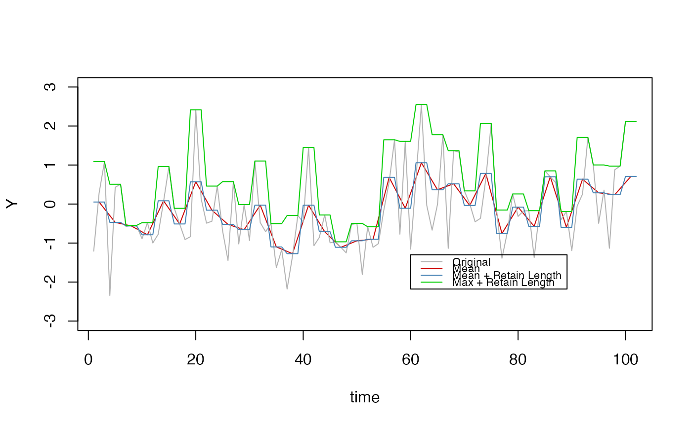

Generate a course grained version of a time series by summarising values into bins.
Usage
ts_coarsegrain(
y,
grain = 2,
summaryFunction = c("mean", "median", "min", "max", "maxFreq")[1],
retainLength = FALSE
)Arguments
- y
A numeric vector
- grain
The bin size in which to summarise the values (default =
2)- summaryFunction
How should the data be summarized in the bins? Can be
"mean","median","min","max", or,"maxFreq". Value"maxFreq"is for categorical data and will pick the most frequently occurring category within the bin (default ="mean")- retainLength
Return only the bin values (
FALSE), or retain the length of the original series? (default =TRUE)
Examples
set.seed(1234)
y <- rnorm(100)
y1 <- ts_coarsegrain(y, grain = 3)
y2 <- ts_coarsegrain(y, grain = 3, retainLength = TRUE)
y3 <- ts_coarsegrain(y, grain = 3, retainLength = TRUE, summaryFunction = "max")
t1 <- seq(1,length(y), by = 3)
plot(t1+1, y1, col = "red3", type = "l", ylim = c(-3,3), xlab = "time", ylab = "Y")
lines(y, col = "grey70")
lines(y2, col = "steelblue")
lines(y3, col = "green3")
legend(60, -1.3, legend=c("Original", "Mean", "Mean + Retain Length", "Max + Retain Length"),
lty = 1, col=c("grey70", "red3", "steelblue","green3"), cex = 0.7)
